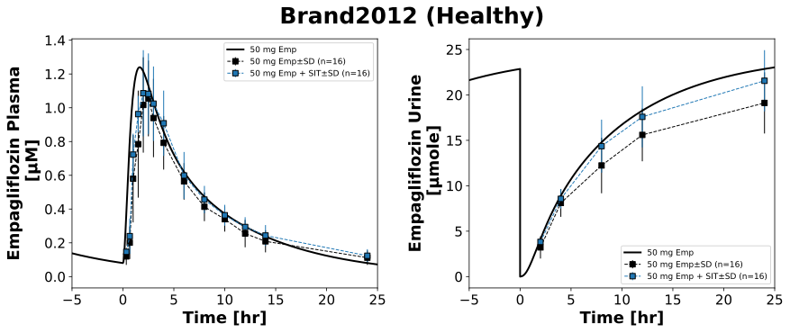

|  |
../../../../experiments/studies/brand2012.py
from typing import Dict
from sbmlsim.data import DataSet, load_pkdb_dataframe
from sbmlsim.fit import FitMapping, FitData
from sbmlutils.console import console
from sbmlsim.plot import Axis, Figure
from sbmlsim.simulation import Timecourse, TimecourseSim
from pkdb_models.models.empagliflozin.experiments.base_experiment import EmpagliflozinSimulationExperiment
from pkdb_models.models.empagliflozin.experiments.metadata import Tissue, Route, Dosing, ApplicationForm, Health, \
Fasting, EmpagliflozinMappingMetaData, Coadministration
from pkdb_models.models.empagliflozin.helpers import run_experiments
class Brand2012(EmpagliflozinSimulationExperiment):
"""Simulation experiment of Brand2012."""
interventions = ["EMP50_D5", "EMP50_D10"]
info = {
"[Cve_emp]": "empagliflozin",
"Aurine_emp": "empagliflozin_urine",
}
fpg = EmpagliflozinSimulationExperiment.fpg_healthy # [mM] (healthy subjects, assuming 5 mM)
bodyweight = 78 # [kg]
gfr = EmpagliflozinSimulationExperiment.gfr_healthy # [ml/min] (healthy subjects, assuming 100 ml/min)
def datasets(self) -> Dict[str, DataSet]:
dsets = {}
for fig_id in ["Fig2", "Fig3"]:
df = load_pkdb_dataframe(f"{self.sid}_{fig_id}", data_path=self.data_path)
for label, df_label in df.groupby("label"):
dset = DataSet.from_df(df_label, self.ureg)
# unit conversion
if label.startswith("empagliflozin_urine_"):
dset.unit_conversion("mean", 1 / self.Mr.emp)
dsets[f"{label}"] = dset
# console.print(dsets)
# console.print(dsets.keys())
return dsets
def simulations(self) -> Dict[str, TimecourseSim]:
Q_ = self.Q_
tcsims = {}
tc0 = Timecourse(
start=0,
end=24 * 60, # [min]
steps=500,
changes={
**self.default_changes(),
"BW": Q_(self.bodyweight, "kg"),
"[KI__fpg]": Q_(self.fpg, "mM"),
# "KI__f_renal_function": Q_(self.gfr, "dimensionless")
"PODOSE_emp": Q_(50, "mg"),
},
)
tc1 = Timecourse(
start=0,
end=24 * 60, # [min]
steps=500,
changes={
"PODOSE_emp": Q_(50, "mg"),
"Aurine_emp": Q_(0, "mmole"),
},
)
tc2 = Timecourse(
start=0,
end=25 * 60, # [min]
steps=500,
changes={
"PODOSE_emp": Q_(50, "mg"),
"Aurine_emp": Q_(0, "mmole"),
},
)
for intervention in self.interventions:
if intervention.endswith("D5"):
tcsims[f"po_{intervention}"] = TimecourseSim(
[tc0] + [tc1 for _ in range(3)] + [tc2],
time_offset=-4 * 24 * 60,
)
elif intervention.endswith("D10"):
tcsims[f"po_{intervention}"] = TimecourseSim(
[tc0] + [tc1 for _ in range(8)] + [tc2],
time_offset=-9 * 24 * 60,
)
return tcsims
def fit_mappings(self) -> Dict[str, FitMapping]:
mappings = {}
for sid, name in self.info.items():
for intervention in self.interventions:
mappings[f"fm_{name}_{intervention}"] = FitMapping(
self,
reference=FitData(
self,
dataset=f"{name}_{intervention}",
xid="time",
yid="mean",
yid_sd="mean_sd",
count="count",
),
observable=FitData(
self, task=f"task_po_{intervention}", xid="time", yid=sid,
),
metadata=EmpagliflozinMappingMetaData(
tissue=Tissue.URINE if "urine" in name else Tissue.PLASMA,
route=Route.PO,
application_form=ApplicationForm.TABLET,
dosing=Dosing.MULTIPLE,
health=Health.HEALTHY,
fasting=Fasting.NR,
coadministration=Coadministration.SITAGLIPTIN if "D10" in intervention else Coadministration.NONE
),
)
# console.print(mappings)
return mappings
def figures(self) -> Dict[str, Figure]:
fig = Figure(
experiment=self,
sid="Fig2_3",
num_rows=1,
num_cols=2,
name=f"{self.__class__.__name__} (Healthy)",
)
plots = fig.create_plots(
xaxis=Axis(self.label_time, unit=self.unit_time),
legend=True,
)
plots[0].set_yaxis(self.label_emp_plasma, unit=self.unit_emp)
plots[1].set_yaxis(self.label_emp_urine, unit=self.unit_emp_urine)
for k in [0, 1]:
plots[k].xaxis.min = -5
plots[k].xaxis.max = 25
for kp, sid in enumerate(self.info):
name = self.info[sid]
# simulation: plotted once
plots[kp].add_data(
task="task_po_EMP50_D5",
xid="time",
yid=sid,
label="50 mg Emp",
color="black",
)
# data
for intervention in self.interventions:
is_emp_only = intervention.endswith("D5")
plots[kp].add_data(
dataset=f"{name}_{intervention}",
xid="time",
yid="mean",
yid_sd="mean_sd",
count="count",
label="50 mg Emp" if is_emp_only else "50 mg Emp + SIT",
color="black" if is_emp_only else "tab:blue",
)
return {fig.sid: fig}
if __name__ == "__main__":
run_experiments(Brand2012, output_dir=Brand2012.__name__)
{kind=link}